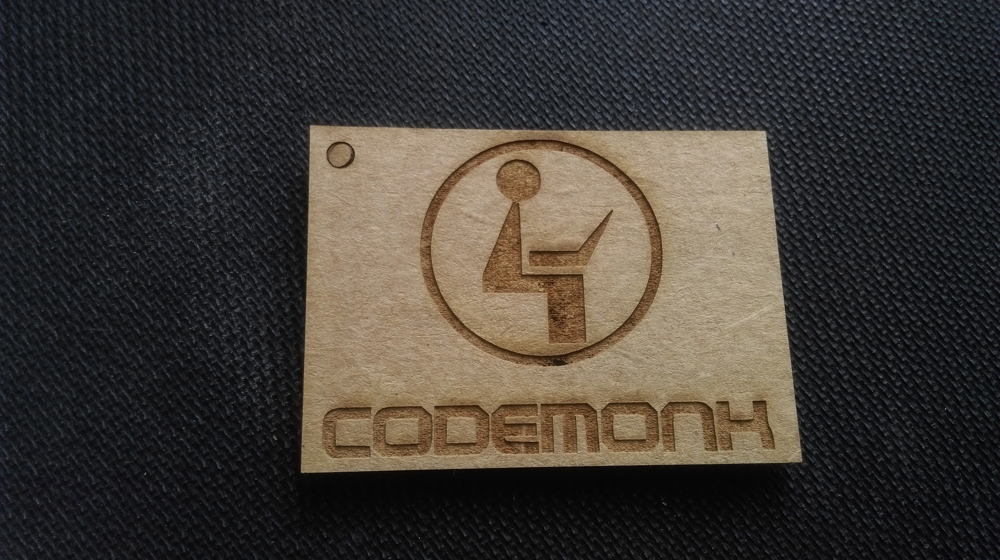

First of all fransisco started with a brief lecture about all the facts about laser cutter like what kind we have what all 'TROTECT SPEEDY 100' is capable of , how is it cutting its KERF etc. The main settings that we can change according to our will are Speed, Power and Frequency

SAFETY first is the thing what fransisco stressed about he explained all about how will effect our eyes and how it leads to permenent blindness within microseconds since our laser is class 4 laser,Closing the lid is the first thing we have to do before cutting anything and he also warned about hacking the lid closing program inorder to make the cuts without closing the lids which is not good since our lid is a good absorbant
This is the test cut by fransisco to check what values have to given for accuarate cut and engraving
This is the setup we have to do in the fume collector of the speedy 100
The below 3 images shows the basic calliberation of the laser cutter,We have to adjust the base untill the clip which is shown below
this is the point when the pin falls as soon as the base touches the pin

This how it will look like after the basic setup and adjustment we have used tape to stick on all four sides inorder to avoid bending of sheets
I decided to do a keychain as my laser cut assignment with engraved logo of my company i have made it after one trial cut
This is my final lasercut keychain in cardboard
